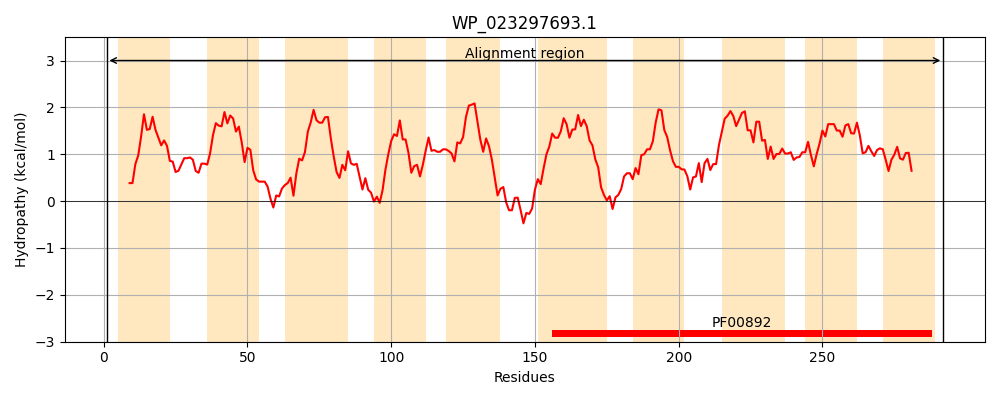
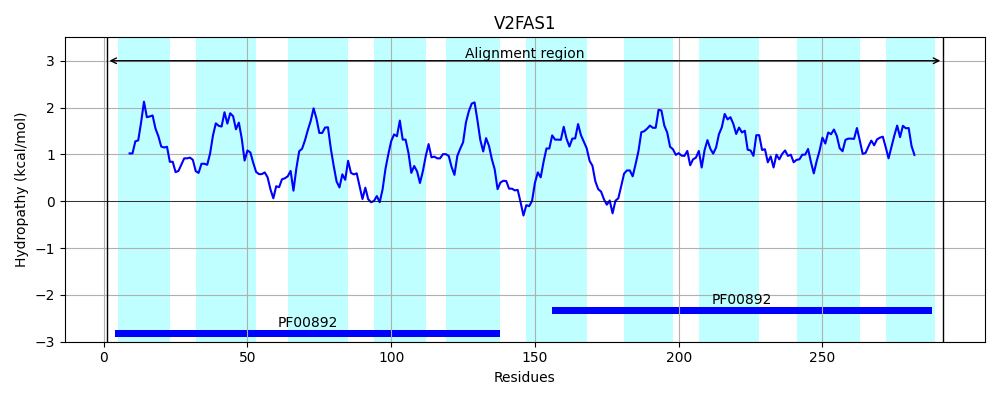
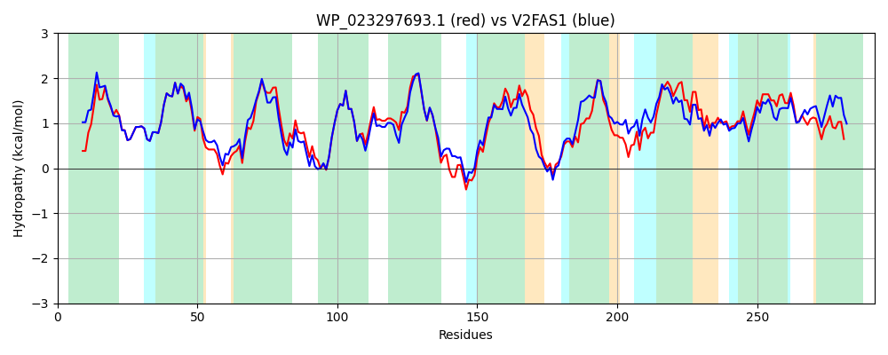

Hit Accession: V2FAS1
Hit TCID: 2.A.7.17.1
Hit Description: gnl|BL_ORD_ID|20463 gnl|TC-DB|V2FAS1|2.A.7.17.1 Aromatic amino acid exporter OS=Salmonella enterica subsp. enterica serovar Bareilly str. CFSAN000197 GN=SEEB0197_00317 PE=4 SV=1
Mach Len: 292
e:0.000000
Query TMS Count : 10
Hit TMS Count: 10
TMS-Overlap Score: 9.100000
Predicted Substrates:CHEBI:8089;phenylalanine, CHEBI:9769;tryptophan, CHEBI:9800;tyrosine
BLAST Alignment:
Score: 1184 , Bit scores: 460 bits, E-value: 1.6e-165, Alignment length: 292, Percentage identity: 76
Query: 1 MQKKRATSIGFAAIILWSTMVGLIRGVSEGLGPVGGAAMIYSLSGLLLIFTVGFPNLRQIPRRYLLAGSVLFVSYEICLALSLGFAATRQQAIEVGMVNYLWPSLTILFAILFNGQKSSWLVIPGLLLALFGVSWVLGGEHGLNPEEIINNVVSSPLSYILAFVGAFIWAAYCTVTAKYAKGKNGITLFVLLTALTLWLKFLASDQPPMLFSWPVVIKLITVSVALGLAYAAWNVGILHGNVSLLAAASYFTPVLSSALAAVLLSATLSWSFWQGAGMVCLGSLLCWYATRR 292
M ++AT IG I+LWSTMVGLIRGVSEGLGPVGGAAMIYSLSGLLLIFTVG P++R+ P RYL+AGSVLFVSYEICLALSLG+AATR QAIEVGMVNYLWPSLTILFAILFNGQK++WL++PGLL+AL GV WVLGGE+GLNP EII+NV +SPLSY+LAF+GAFIWA YCTVT KYA+G NGIT+FVLLTA+ LW + + QP M+FS PV+ KL T ++ LG AYAAWNVGILHGNV+++A SYFTPV+SSALAA+LLS+ LS+SFWQGA MVC+GSLLCW ATRR
Sbjct: 1 MTSQKATLIGLVTIVLWSTMVGLIRGVSEGLGPVGGAAMIYSLSGLLLIFTVGLPDIRRFPGRYLIAGSVLFVSYEICLALSLGYAATRHQAIEVGMVNYLWPSLTILFAILFNGQKTNWLIVPGLLIALTGVCWVLGGENGLNPGEIISNVATSPLSYLLAFLGAFIWATYCTVTNKYARGFNGITVFVLLTAVALWFHYFLTPQPAMIFSLPVIAKLFTAALTLGFAYAAWNVGILHGNVTIMAVGSYFTPVMSSALAALLLSSPLSFSFWQGAVMVCVGSLLCWLATRR 292 | Protein Hydropathy Plots: |
|---|
|  |  |
Pairwise Alignment-Hydropathy Plot:
|
|---|
|  |